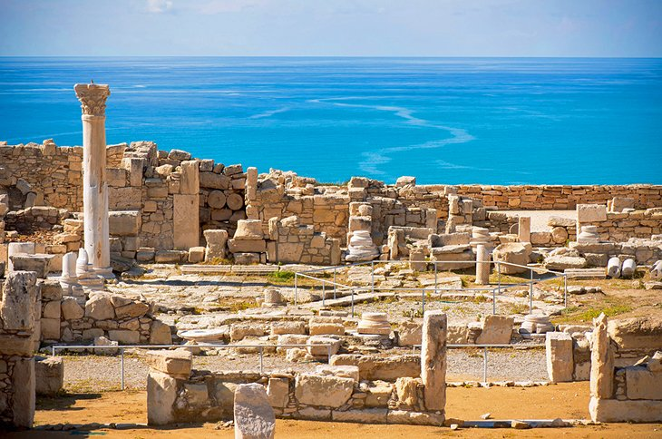

CYPRUS
Discover an island rich in history and culture,
and full of wonderful experiences just waiting to be enjoyed!
Location
Cyprus is an island in the Eastern Mediterranean Sea
renowned since ancient times for its mineral wealth,
superb wines and produce, and natural beauty.
History
Cyprus is home to some of the oldest water wells in the world. Cyprus was settled by Mycenaean Greeks in two waves in the 2nd millennium BC. As a strategic location in the Eastern Mediterranean, it was subsequently occupied by several major powers, including the empires of the Assyrians, Egyptians and Persians, from whom the island was seized in 333 BC by Alexander the Great.
